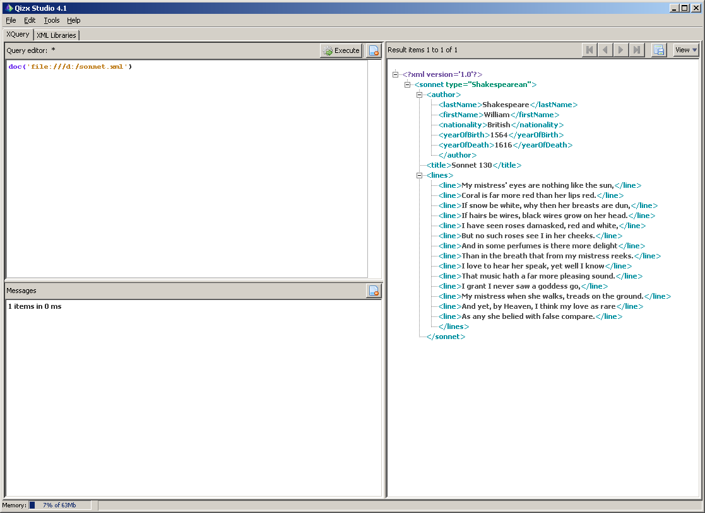
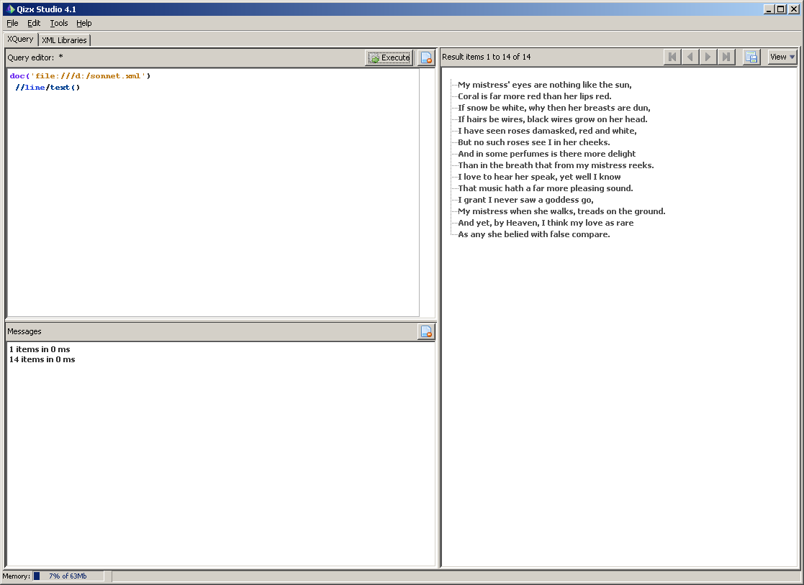

XML XPath, XQuery
Цель лабораторной работы:
Познакомиться c технологиями XPath, XQuery.
I. Теоретические сведения
Краткое описание XPath и XQuery можно посмотреть в этой презентации(© А.С. Деревянко). Технология XPath предназначена для адресации какой-либо части дерева XML, и, чаще всего, используется вместе с технологией XSLT. XQuery является своего рода расширением языка XPath, и позволяет строить более сложные запросы к дереву XML документа (например, к разным его веткам).
Программирование XPath и XQuery запросов является с программной точки зрения нелегкой задачей, поэтому для их создания воспользуемся freeware open source утилитой qizx/open. Утилита написана на Java. Ее можно скачать с официального сайта, или портативную (не требующую инсталляции) версию отсюда. В случае, если дистрибутив взят с официального сайта, то для запуска воспользуйтесь документацией. Если дистрибутив скачан с сайта кафедры, то достаточно распаковать содержимое архива, и в поддиректории BIN запустить файл start.bat. Естественно, что в обоих случаях для работы программы необходима установленная в системе машина Java (тестировалось с jre 6 upd 22).
Практический пример
Пусть мы имеем XML документ sonnet.xml следующего содержания:
<?xml version="1.0"?> <sonnet type="Shakespearean"> <author> <lastName>Shakespeare</lastName> <firstName>William</firstName> <nationality>British</nationality> <yearOfBirth>1564</yearOfBirth> <yearOfDeath>1616</yearOfDeath> </author> <title>Sonnet 130</title> <lines> <line>My mistress' eyes are nothing like the sun,</line> <line>Coral is far more red than her lips red.</line> <line>If snow be white, why then her breasts are dun,</line> <line>If hairs be wires, black wires grow on her head.</line> <line>I have seen roses damasked, red and white,</line> <line>But no such roses see I in her cheeks.</line> <line>And in some perfumes is there more delight</line> <line>Than in the breath that from my mistress reeks.</line> <line>I love to hear her speak, yet well I know</line> <line>That music hath a far more pleasing sound.</line> <line>I grant I never saw a goddess go,</line> <line>My mistress when she walks, treads on the ground.</line> <line>And yet, by Heaven, I think my love as rare</line> <line>As any she belied with false compare.</line> </lines> </sonnet>
Общий вид запущеного приложения qizx

Чтобы загрузить XML документ для разбора парсером, необходимо выполнить комманду
doc('file:///полный_путь/sonnet.xml');
например,
doc('file:///d:/devj/xml/sonnet.xml');
Если необходимо "выполнить" выражение XPath, необходимо воспользоваться коммандой
doc(...) XPath_выражение
Например, выражение
doc('file:///d:/devj/xml/sonnet.xml')
//line/text()
Выдаст построчно содержимое соннета.

Задание на лабораторную работу
Необходимо для XML документа, созданого в первой лабораторной работе, выполнить такие запросы:
- Запрос на поиск любого элемента в любом месте, независимо от уровня и места нахождения.
- Запрос на поиск элемента, относительно корня.
- Запрос на поиск элемента, относительно любой (выбранной Вами) оси.
- Запрос на поиск элемента, у которого проверяется равенство аттрибута конкретному значению.
- Запрос с применением строковых функций для работы с содержимым элемента.
- Запрос на применение агрегирующей функции (типа avg).
- Любой запрос с применением оператора XQuery.